At A Glance
12 At a Glance
173

At A Glance
12 At a Glance
173


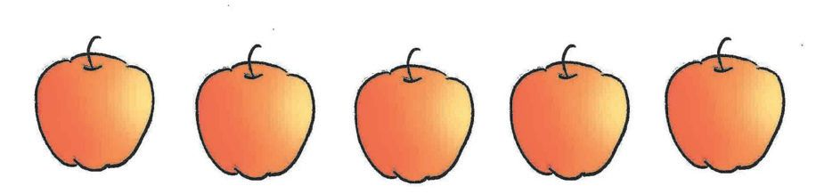
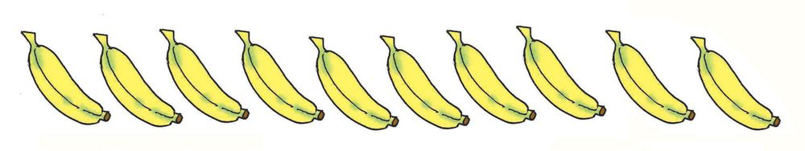
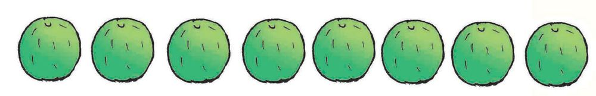


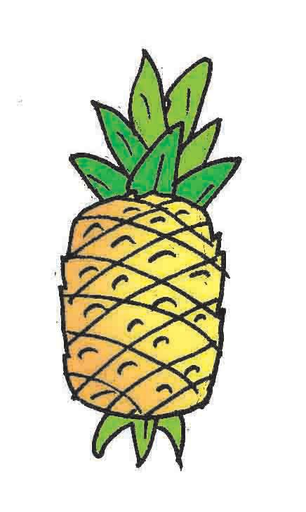
Mathematics Standard - III
Fruit Salad The children in Milan's class brought fruits to make fruit salad. Do you have all kinds of fruits?
How many of each fruit are there?
How can we count if they're mixed up like this?
Let's sort them See how the fruits are sorted.
174


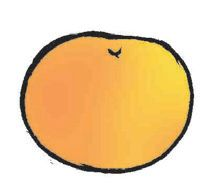
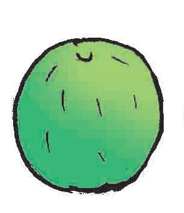

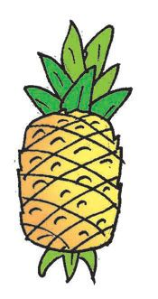
At A Glance
Fruit
Number •
Which fruit is the most in number? No' oranges!
•
Which fruit is only one in number?
•
Which fruits are same in number?
•
How many more guavas are there than pineapples?
•
Which fruits are more in number than mangoes?
175
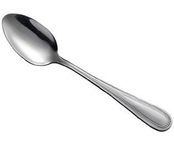
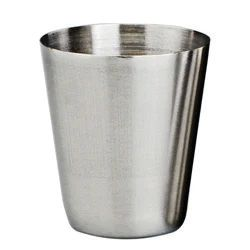
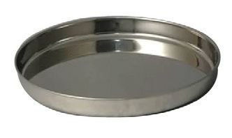
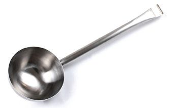
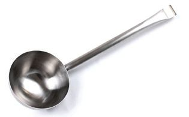
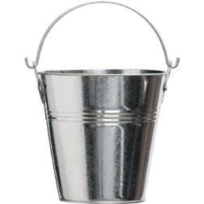
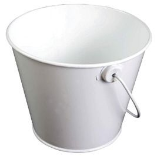
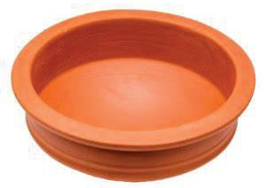
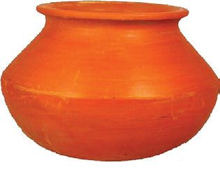
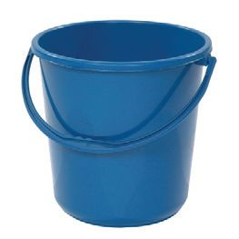
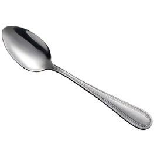
Mathematics Standard - III
They took vessels from the school kitchen and made fruit salad. And shared it with others. Can you also make fruit salad? What vessels would you take from the kitchen? Write in the table below.
Item
Number
Item
Number
At My Home The number of vessels in my home
Item
Number
Item
Number
176

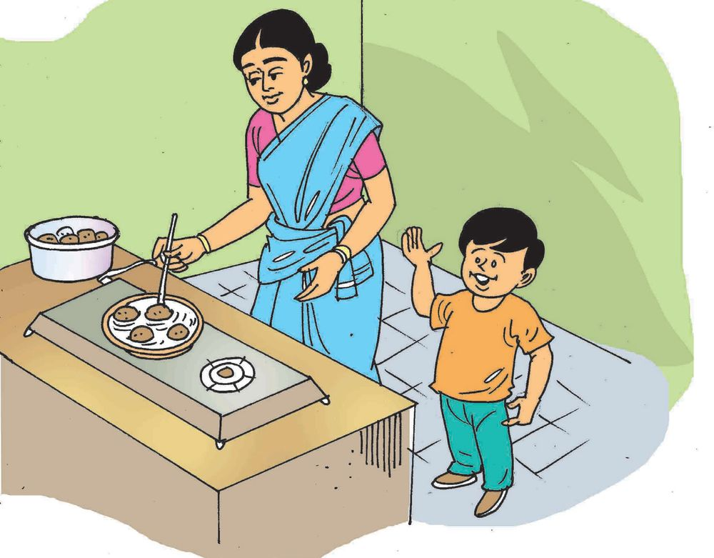

At A Glance
Snacks Milan went to the kitchen to count the vessels. His mother was making unniyappam, his favourite snack.
It's my birthday... I'll give unniyappam to all my friends
Millan went to his class with unniyappam I like ilayada more.
177

Mathematics Standard - III
Ask your friends about their favourite snacks. Make a table of the number of children who like each snack using pictures like this. Snack
Numbers
• Ilayada • Neyyappam • Uzhunnuvada • Bonda • Unniyappam • Parippuvada • Ullivada • • Which snack is liked by the most number? How many? How many like uzhunnuvada? Which snack is not liked by anyone? Write some questions like this. Ask your friends also
• • • • 178


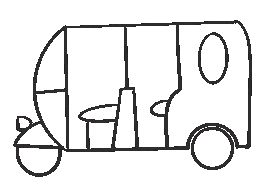
At A Glance
Toy Vehicles They went to the toy shop to buy a birthday gift for Milan. See the many toy vehicles in the picture Draw as many pictures of each toy as there are in the shop. Write their numbers also Pictures
179
Number

Mathematics Standard - III
Which vehicle is the least in number? Which vehicles are of the same number? My questions
• • • • •
So Much to See! What things do you see in your school building? Doors, windows, blackboards, lights, fans, switches and so on. Make a table of these. Item
Number in pictures
Window Door Blackboard Switchboard Fan Light My questions
• • 180
Number

At A Glance
Picture Reading Look at the picture on page 173. Which animals and birds do you see? Write in this table. Name
Number
Monkey
My questions
• • • •
181


Mathematics Standard - III
Assessment How Many Children? The table shows the data of students in Milan's school.
Class
Number of boys
Number of girls
I
15
19
II
20
20
III
19
22
IV
20
17
• Which class has the most number of girls? • Which class has the most number of children? • How many boys are fewer in class IV than the boys in class I?
• Which classes have the same number of boys? • In Milan's school - How many boys are there? - How many girls are there? - What is the total number of students?
182